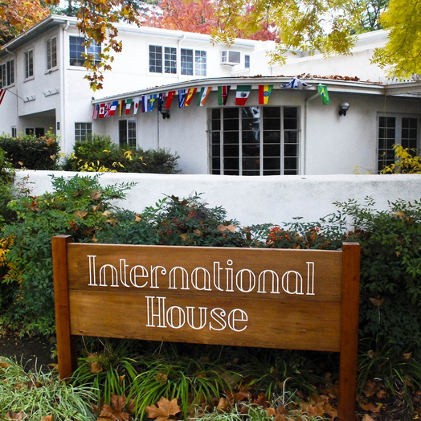

ABOUT

Who We Are
International House Davis (I-House) is a non-profit, community-based organization. The mission of I-House is to promote respect and appreciation for all people and cultures. We encourage a global community by providing many opportunities for cross-cultural interaction and exchange. I-House pursues these goals by providing programs, activities and services for international students and scholars, other international visitors, community members, businesses and academic institutions. We are not a part of UC Davis; however, we work closely with campus departments and we welcome not only students, but community members from throughout the area.
OUR BACKGROUND
Until the late 1970s, International House Davis was only a dream, but Mr. and Mrs. Shunta Yamamoto of Tokyo arrived with aspirations of starting an institution to foster a cultural learning. With the help of the community, this dream was soon realized and the non-profit corporation was formally established in 1981. Then in 1983, the property at 10 College Park was acquired through a generous gift from the Yamamotos and the facility, now known as International House Davis, opened in March 1984.
Since its inception, a working board of 15-20 volunteers has managed the facility and developed programs. For eight years the organization was guided by dedicated, part-time program directors. In 1990 the city of Davis and UC Davis granted I-House service contracts which allowed the board to hire a full-time executive director and office manager. The next year a volunteer coordinator was added.
In 1989, I-House underwent a major renovation, and in 1993, volunteers contributed 2,300 hours to build the much-needed Hagan Conference Room. In 1997, a 3,300 sq. ft. south wing was added, greatly improving the organization’s ability to provide quality programs.
MISSION
International House aims to foster respect and appreciation for people of all cultures and to encourage a global community for cross-cultural exchange. To achieve this goal, International House provides programs and services for international visitors, students, academic institutions, businesses, and community members alike.
STAFF

I-House staff from left to right: Deb Killeen, Lou Ziskind, Ryndie Azevedo.
Not pictured: Paymon Bonyadi